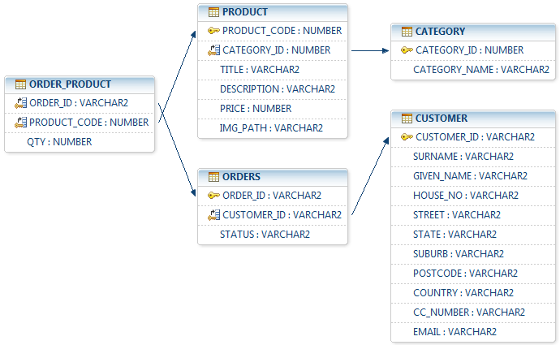
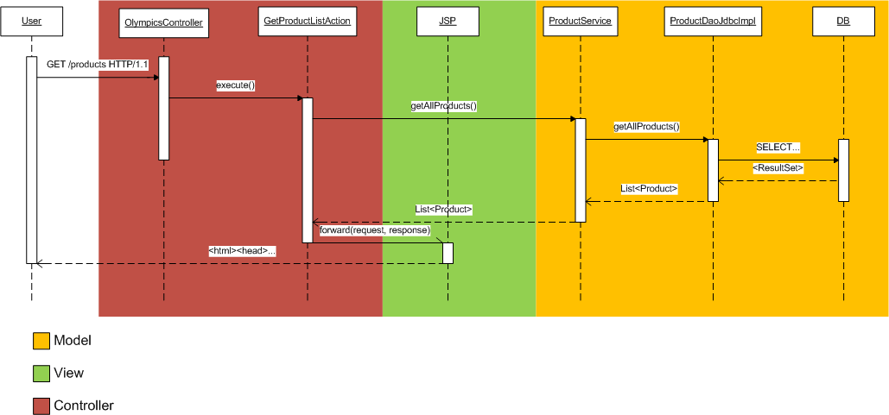

Aside from the components which make up the web applications, some additional files have also been added
Please note: The scripts provided in the sql/ directory are designed for an Oracle database, and may not work as intended for any other database type. The packages defined in PKG_AIP1.pks and PKG_AIP1.pkb are Oracle-specific PL/SQL programs which are not compatible with any other database type. If the DBMS being used is not Oracle, these functions must be rewritten in that DBMS's language.
Because the scripts in the sql/ directory are interdependent, and in order to avoid any errors from the database, they must be executed in this order:
Because this web application uses forms-based authentication to authenticate the orders user, this user will need to be created on the WebLogic side. Before we do that, We will need to disable the default password validator requiring at least one numerical character (because the orders password has no numerical characters):
You will need to configure a data source which points to a schema where the database objects in section 1.1 were set up. This data source must have a JNDI name of jdbc/olympicsShopDataSource. Please see the WebLogic documentation on how to set up a JDBC data source in WebLogic server
The entity-relationship model for this class is as follows:
The CATEGORY table lists a series of item categories that are displayed on the right hand side of the /products page. It is driven by a manually-defined ID (i.e. no sequences are involved. When a new category is added, the user is required to manually define the ID for the new category).
The PRODUCT table lists all products and their corresponding categories. This table contains the standard set of product-related information (e.g. title, description, price) in addition to an absolute path to an image of this particular product. Storing the image in the database somewhat limits the ability for dynamically displaying different images of the same product, but for this relatively simple design this method was chosen for simplicity's sake (for example, the presentation layer need not perform any concatenation of strings in order to build a product image URL).
Like the CATEGORY table, this table does not have any auto-generation of product IDs, which means that retrieving the next available product code is required to be done manually.
The CUSTOMER table is a straightforward repository of customer information. Any customer who completes the checkout process has a unique entry entered into this table. If a customer is returning and submitting a new order, they will have a new entry in the customer table, as the current system does not currently have a concept of user accounts.
When a customer's order is submitted, the ORDERS, CUSTOMER and ORDER_PRODUCT tables are updated. The ORDERS table contains a unique order ID (which is given to the customer for order tracking), a reference to the customer's ID who submitted this order, and a status which can be one of ORDERED, PAID or SENT.
Finally, the ORDER_PRODUCT table is a relationship table which links the order with the products that have been purchased (or are currently in the cart). Effectively this is the model for the shopping cart (i.e. a list of items and an owner).
The Javadoc for this project can be found here
This package contains POJOs which reflect the database model. The classes are identical apart from the ShoppingCart POJO, which contains an overhead Order object and then a list of OrderProducts. The OrderProduct class only contains the order ID and as a result needs to have an overall order as an "owner." This is only required in the Java context as this is managed by foreign key constraints on the database level.
This package contains the DAO interfaces for retrieving data from the database, and also their JDBC implementations. The interface (e.g. ProductDao) gives a list of operations that the consumer is able to perform on a product or products, and its implementation (e.g. ProductDaoJdbcImpl) provides a JDBC implementation of performing that particular activity.
This package provides services that provide another layer of abstraction away from the data source. A service is a component which retrieves business data that could potentially come from a number of different DAOs. Implementing this layer of abstraction means that the Servlet is always shielded from any changes to how the actual business data is retrieved. If for example this solution started using EJBs or web services as a data source instead of JDBC, then there would not be any need to change the Servlet as the information itself will not change, rather only the method of retrieval.
This package contains the actual Servlets which handle requests and perform controller activities such as redirection and data gathering.
Provides utilities that are common to the entire application.
Contains listeners which listen to different context lifecycle events.
This package provides the actions that are called upon by the session facade Servlet in the servlet package. These actions include viewing the cart, updating the cart, checking out, etc.
This solution uses the Model 2 ("MVC") design pattern. There is a strict separation of responsiblities between the components which display content (JSP pages, the view), ones which perform orchestration and control the workflow (Servlets and Actions, the controllers), and finally the components which represent the business object model (POJOs, the model). The method of transport for data between the model and controller is the service interface (com.paltaie.olympics.service.*), which shields the controller from changes to the way that business data is retrieved.
Below is a UML sequence diagram which shows the use case of retrieving the product list. It shows the interaction between the different components, and a rough delineation of where certain components of the web application lie with regards to the MVC idea:
The OlympicsController session facade receives the request from the client. Based on the action provided by the user, the facade forwards the request to the appropriate Action implementation which will fulfil the request and perform the relevant controller activities (i.e. retrieving data from DAOs, instantiating beans, and forwarding the request to the relevant JSP).
It is important to note that some components act as mediators between the different layers (e.g. the ProductService is a service class which communicates with the DAOs and services the controller).